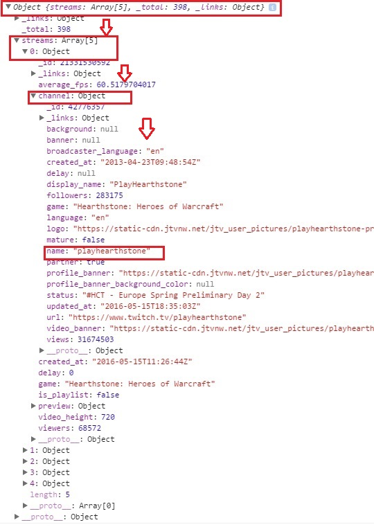

The response from our request is sent back to us in the JavaScript Object Notation (JSON) format. To read more about this format, visit the official site. We’ll focus on working with the response. Let’s look back at our original program.
request.addEventListener("load", function() {
var response = JSON.parse(request.responseText);
...
}Specifically, let's look at this line. var response = JSON.parse(request.responseText)
When we our API call is finished, the response is stored as a string in the request object i.e. request.responseText
To convert the string to a JavaScript object, we call the built-in function JSON.parse() and assign it to the variable we will work with.
If we call console.log(response) at this point, we get the following output in the console.
This may look overwhelming, but it’s actually quite simple to navigate. For example, if we wanted to get the name of the first stream returned, we access it like so response.streams[0].channel.name
To get this, we start at the root of the object and move outward. In this case, response is the root. Root to streams[0] to channel to name. Visually, the movement through the tree looks like this.
Now that we're familiar with the format of our response and how to get it, let's look at how to do useful things with it, such as embedding previews of our queries.